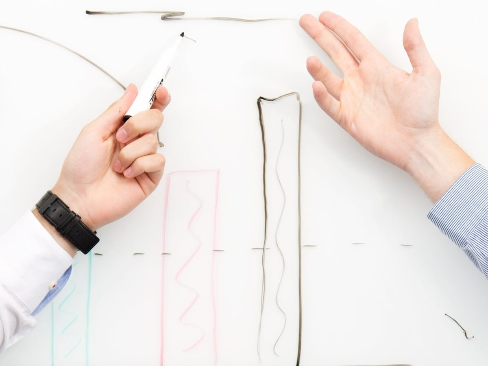
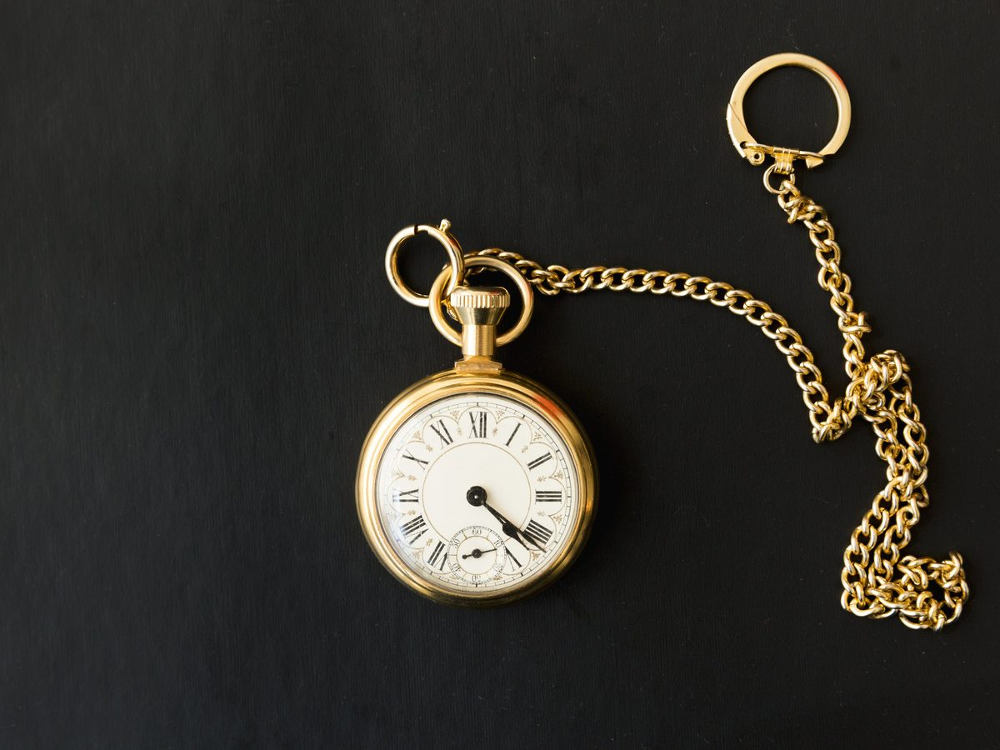

Ekip Yönetimi, Performans ve Planlama
Başarılı ekipler yalnızca iyi çalışan bireylerden değil, doğru planlanan, doğru yönetilen ve ortak hedefler doğrultusunda hareket eden insanlardan oluşur.
Güçlü Ekip Yönetimi, Gelişen Performans, Verimli Süreçler
TUKSAL Danışmanlık olarak kurumların ekip yönetimi süreçlerini güçlendirmek, çalışan performansını geliştirmek ve iş süreçlerini daha verimli hale getirmek amacıyla ekip yönetimi, performans ve planlama programları sunuyoruz.
Ekip Yönetimi
Kurumların ekip yönetimi süreçlerini güçlendiriyoruz.
Performans
Çalışan performansını geliştiriyor, ölçülebilir ve takip edilebilir hale getiriyoruz.
Planlama
İş süreçlerini planlayarak daha verimli hale getiriyoruz.
Ekipleri Ortak Hedefte Buluşturuyoruz
Ekip içindeki iletişim, görev dağılımı, sorumluluk paylaşımı ve hedeflerin netliği performansın temel unsurlarıdır.
Çalışmalarımız kapsamında;
- Ekip yapısının ve görev dağılımlarının değerlendirilmesi
- Ortak hedef ve performans kriterlerinin belirlenmesi
- Etkin görev ve sorumluluk yönetimi
- İş gücü ve kaynak planlaması
- Zaman ve öncelik yönetimi
- Ekip içi iletişim ve koordinasyon
- Performans takibi ve değerlendirme
- Geri bildirim kültürünün geliştirilmesi
- Motivasyon ve çalışan bağlılığı
- Problem çözme ve karar alma
- İş süreçlerinin verimlilik açısından değerlendirilmesi
gibi alanlara odaklanıyoruz.
Performansı Ölçülebilir Hale Getiriyoruz
Performansın sürdürülebilir olması için hedeflerin ölçülebilir ve takip edilebilir olması gerekir.
Kurumun ihtiyaçlarına göre hedefler, performans göstergeleri ve takip mekanizmaları oluşturulmasına destek oluyor; yöneticilerin ekiplerinin performansını daha sistematik şekilde değerlendirmelerini sağlıyoruz.


Planlama ile Verimliliği Artırıyoruz
Doğru planlama; zamanın, insan kaynağının ve bütçenin daha etkin kullanılmasını sağlar.
Günlük operasyonlardan dönemsel hedeflere kadar iş süreçlerini planlayarak ekiplerin daha organize çalışmasına, önceliklerini doğru belirlemesine ve kaynaklarını daha verimli kullanmasına katkı sağlıyoruz.
Ekipten Performansa, Performanstan Sonuca
Amacımız yalnızca ekipleri yönetmek değil; ekiplerin birlikte daha iyi sonuç üretmesini sağlamaktır.
TUKSAL Danışmanlık olarak ekiplerin güçlü yönlerini ortaya çıkarıyor, gelişim alanlarını belirliyor ve kurum hedefleriyle çalışan performansı arasında güçlü bir bağlantı kurulmasına destek oluyoruz.
Doğru ekip. Doğru planlama. Ölçülebilir performans. Sürdürülebilir başarı.
Ekibinizin performansını birlikte planlayalım
Kurumunuza özel ekip ve performans planlaması
İhtiyacınızı paylaşın; kurumunuzun hedefleri doğrultusunda ekip yönetimi, performans ve planlama programı önerelim.
Program; ekip yapısını, performans hedeflerini ve iş süreçlerinin planlanmasını kurumun ihtiyaçlarına göre ele alır.